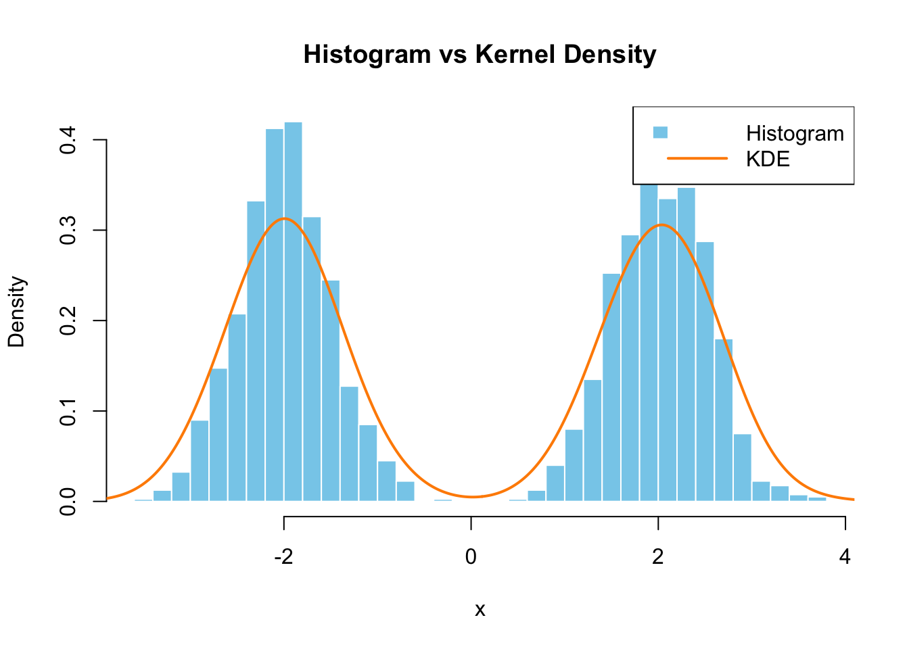
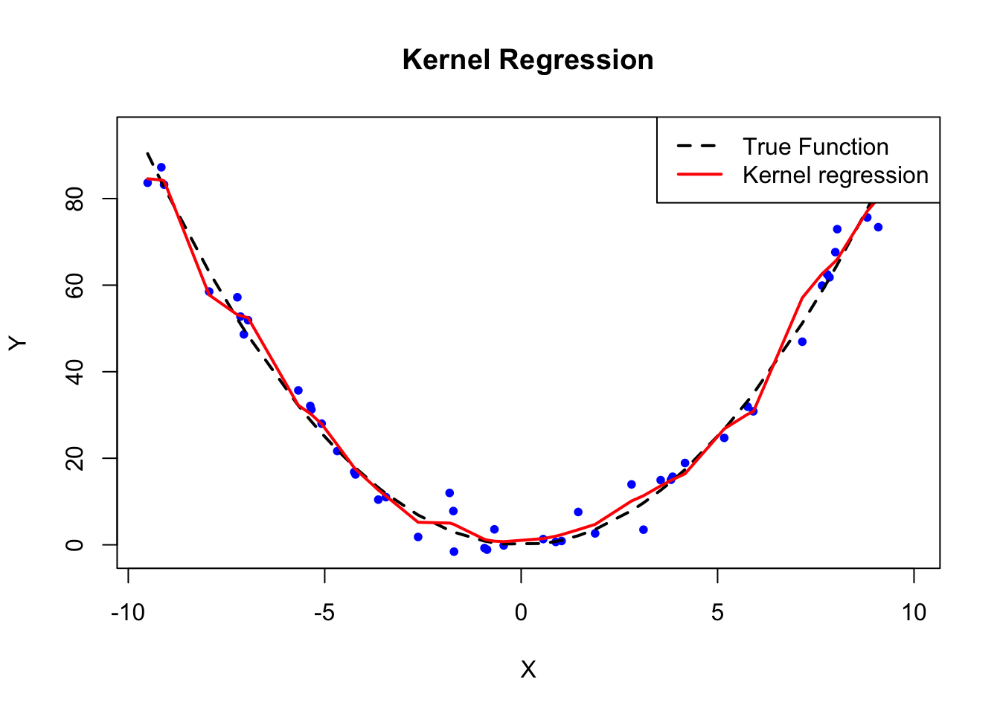

Chapter 8 Nonparametric Estimations - Basics
In previous chapter, we explored the Dichotomy of Statistical Modeling with a focus on Parametric vs. Nonparametric Models. Parametric models, as discussed, assume that the data-generating process follows a specific form, with a fixed number of parameters that we estimate. This assumption allows for simpler interpretations and computational efficiency, making parametric models a popular choice in both economics, social and health sciences, and machine learning. In the previous chapter, we concentrated on Parametric Estimations, such as the Linear Probability Model and Logistic Regression, which rely on known functional forms and assumptions about the relationship between predictors and outcomes. These models allow us to find associations, estimate causal effects, and offer robust predictions and interpretations when the underlying assumptions are valid. However, they can be limiting when the true data-generating process is complex or unknown, which is often the case.
This chapter introduces Nonparametric Estimations, a more flexible approach that does not assume a specific functional form for the data. Nonparametric methods adapt to the structure of the data, allowing for more complex relationships to emerge without predefined assumptions. However, this flexibility comes at the cost of interpretability and computational efficiency, especially with larger datasets.
Nonparametric regressions form the foundation of many modern machine learning techniques due to their flexibility in modeling complex relationships without making strong assumptions about the underlying data structure. Unlike parametric models, which assume a specific functional form, nonparametric methods allow the data to guide the shape of the model, making them ideal for uncovering patterns in high-dimensional or nonlinear datasets. This flexibility is key in machine learning, where tasks often involve capturing intricate relationships between variables, such as predicting customer behavior or disease outcomes. Nonparametric methods like kernel regression, decision trees, and k-nearest neighbors serve as the basis for more advanced algorithms like random forests, support vector machines, and deep learning, which further improve the predictive power while maintaining the ability to generalize well to unseen data. These methods are particularly powerful in situations where the data is too complex for simple parametric models, making nonparametric estimations a crucial building block for machine learning applications.
We will begin by discussing the basics of density estimation, a core concept in nonparametric statistics. From there, we will explore one of the most widely used nonparametric techniques: kernel density estimation and regression. These methods provide a foundation for understanding more advanced nonparametric models, making this chapter an essential starting point for those looking to extend beyond the constraints of parametric assumptions.
8.1 Density Estimation
In statistical modeling, understanding the distribution of a dataset is essential for many types of analysis. Parametric models typically assume that the data follow a known distribution, such as the normal distribution, with a few parameters to estimate. However, when we wish to avoid making strong assumptions about the underlying distribution, nonparametric density estimation offers a flexible approach to estimating the probability distribution of a random variable.
Let’s assume that a sample of \(n\) observations, \(y_1, \dots, y_n\), is drawn from a parametric distribution \(f(y; \theta)\). The joint density function for these independent and identically distributed (i.i.d.) observations is:
\[\begin{equation} f(y; \theta) = \prod_{i=1}^{n} f(y_i; \theta) \end{equation}\]
To estimate \(\theta\), we maximize the likelihood or log-likelihood:
\[\begin{equation} \ell(y; \theta) = \sum_{i=1}^{n} \log f(y_i; \theta) \end{equation}\]
This approach is called . If \(f(y; \theta)\) is not the correct form, it leads to biased estimates.
To avoid such biases, we use , which estimates the density directly from the data without assuming a specific parametric form. Given a set of data points \(X_1, X_2, \dots, X_n\) drawn from some unknown probability distribution with a probability density function (PDF) \(f(x)\), the goal of density estimation is to estimate \(f(x)\) without assuming any particular form for it. In nonparametric methods, the shape of the density function is determined directly from the data, offering more flexibility compared to parametric methods. Here, \(y\) is used for parametric estimation, as it typically represents the dependent variable or outcomes in parametric estimations, and \(x\) is used in the context of nonparametric density estimation, where we are focused on the independent variable whose distribution we wish to estimate.
8.1.1 Histogram Density Estimation
One of the simplest forms of nonparametric density estimation is the histogram. The histogram groups the data into bins and counts the number of observations that fall into each bin. The density is then estimated by normalizing these counts by the total number of observations and the width of the bins. The histogram estimate of the density at a point \(x\) is given by:
\[\begin{equation} \hat{f}(x) = \frac{1}{n h} \sum_{i=1}^{n} \mathbf{1}(x_i \in \text{Bin}(x)) \end{equation}\]
Where:For instance, assume there are 2000 total observations, \(x = 3\), and the bin width \(h = 1\). The bin containing \(x = 3\) covers the interval \([x - h, x + h]\), which is \([3 - 1, 3 + 1] = [2, 4]\). If there are 100 observations in this bin, the estimated density \(\hat{f}(3)\) would be: \(\hat{f}(3) = \frac{1}{2000 \times 1} \times 100 = \frac{100}{2000} = 0.05\)
Thus, the estimated density at \(x = 3\) is 0.05, meaning that approximately 5% of the total observations fall in the interval \([2, 4]\). While histograms are easy to understand, they suffer from limitations such as their dependence on bin width and location, which can lead to poor approximations of the underlying density.
8.1.2 Naive Estimator (Parzen Windows)
A more sophisticated approach to nonparametric density estimation is the or . This method smooths the distribution by using a moving window (with intersections between bins) instead of fixed bins. The naive estimator is given by:
\[\begin{equation} \hat{f}(x) = \frac{1}{n h} \sum_{i=1}^{n} I\left( x - \frac{h}{2} < x_i < x + \frac{h}{2} \right) \end{equation}\]
Where \(I(\cdot)\) is an indicator function, and \(h\) is the bin width, which defines the range of the bin. While the naive estimator offers some improvement over histograms, it assigns equal weight to all points within a given window, regardless of their distance from the estimation point.
8.2 Kernel Density Estimation (KDE)
Kernel Density Estimation (KDE) addresses the limitations of both histograms and the naive estimator by assigning weights to each data point based on their distance from the estimation point. Instead of using uniform weights, KDE smooths the distribution of data points by placing a “kernel” over each data point and then summing the contributions from all kernels to estimate the density. The kernel function, often a smooth, symmetric function such as a Gaussian, controls how much influence each data point has on the estimate of \(f(x)\).
The kernel density estimator of \(f(x)\) is given by:
\[\begin{equation} \hat{f}(x;h) = \frac{1}{n h} \sum_{i=1}^{n} K\left( \frac{x - x_i}{h} \right) \end{equation}\]
Where:The choice of bandwidth \(h\) is crucial in determining the quality of the density estimate. A small \(h\) leads to an overfit, with the estimate capturing too much noise, while a large \(h\) may oversmooth the data, losing important details of the distribution. Common kernel functions include:
Another common notation is
\[\begin{equation} K_h(z) = \frac{1}{h} K\left(\frac{z}{h}\right), \end{equation}\]
so the kernel density estimator (KDE) can be compactly written as
\[\begin{equation} \hat{f}(x; h) = \frac{1}{n} \sum_{i=1}^{n} K_h(x - X_i). \end{equation}\]
For instance, suppose we have 2000 total observations, and we want to estimate the density at \(x = 3\) with a bandwidth \(h = 1\). The Epanechnikov kernel gives more weight to observations near \(x = 3\) and less weight to those further away. If we have the following five data points: \(x_1 = 2.5\), \(x_2 = 2.7\), \(x_3 = 3.1\), \(x_4 = 3.5\), and \(x_5 = 3.8\), we can compute the contribution of each point to the density estimate at \(x = 3\) as follows:
\[ \hat{f}(3) = \frac{1}{5 \times 1} \left[ \frac{3}{4}(1 - (0.5)^2) + \frac{3}{4}(1 - (0.3)^2) + \frac{3}{4}(1 - (0.1)^2) + \frac{3}{4}(1 - (0.5)^2) + 0 \right] \]
Since the Epanechnikov kernel assigns a weight of 0 for any point more than 1 unit away from \(x\), the observation at \(x_5 = 3.8\) does not contribute to the estimate because \(\left|\frac{3 - 3.8}{1}\right| = 0.8\) exceeds the support of kernel of \([-1, 1]\). The density estimate is then computed as \(\hat{f}(3) = 0.51\). Thus, the estimated density at \(x = 3\) using the Epanechnikov kernel with \(h = 1\) is approximately \(0.51\). This example demonstrates how the Epanechnikov kernel assigns different weights to data points based on their proximity to the point of interest, leading to a smooth density estimate. Although the type of kernel function \(K(u)\) influences the estimate, the choice of bandwidth \(h\) is far more important in determining the overall smoothness.
8.2.1 Simulation: KDE vs Histogram
We can now simulate a density estimation example using both a histogram and a kernel density estimator. We will generate a set of random data points from a mixture of normal distributions and compare the estimated density using both the histogram and KDE methods. This will demonstrate how KDE offers a smoother and more flexible estimate compared to the histogram method.

FIGURE 8.1: Histogram vs Kernel Density Estimation
In this simulation, we generated \(n = 2000\) data points from a mixture of two normal distributions, one centered at \(-2\) and the other at \(2\), both with a standard deviation of \(0.5\). The goal is to estimate the probability density function using both a histogram and kernel density estimation (KDE).
The histogram groups the data into bins. For each bin, it counts the number of observations and normalizes by the total number of observations \(n = 2000\) and the bin width \(h\). For example, at \(x = 3\), we check the bin containing \(x = 3\). Let’s assume the bin width \(h = 0.2\). If there are 15 observations in the bin, the density estimate is computed as:
\[ \hat{f}_{\text{hist}}(3) = \frac{1}{n \cdot h} \sum_{i=1}^{n} \mathbf{1}(x_i \in \text{Bin}(3)) = \frac{15}{2000 \cdot 0.2} = 0.0375 \] For every value of \(x\), this process is repeated to estimate the density across all bins.
For the KDE, we use a kernel function (in this case, the Gaussian kernel). The kernel function places a smooth, continuous curve over each observation, and the density estimate at \(x = 3\) is computed by summing the contributions from all observations weighted by their distance from \(x = 3\).
\[ \hat{f}_{\text{kde}}(3) = \frac{1}{2000 \times 1} \sum_{i=1}^{2000} \frac{1}{\sqrt{2\pi}} e^{-\frac{(3 - x_i)^2}{2}} \approx 0.05 \]
For each point \(x\), both the histogram and KDE methods compute the density using the same principles described above, with KDE providing more flexibility due to the choice of kernel and bandwidth.
In this case, the KDE (shown by the line in the plot) offers a smoother estimate compared to the histogram, especially in regions where the data points are sparse. The choice of bandwidth \(h\) is crucial in determining the smoothness of the KDE. A small bandwidth leads to a more detailed estimate (but may overfit the data), while a large bandwidth smooths out the estimate (but may miss important features). We will discuss how to select appropriate hyperparameter \(h\), bandwidth, in the next chapter.
8.2.2 Prediction with Kernel Density Estimation
Kernel Density Estimation (KDE) is not only a powerful tool for estimating the underlying probability density function (PDF) of a dataset but also for predicting the density at new data points. This nonparametric approach allows for flexible estimation without assuming a specific parametric form, making it especially useful when the true distribution of the data is unknown or complex.
In many real-world applications, we often encounter situations where we need to predict the likelihood or density of a new observation that hasn’t been seen before. In finance, KDE can be used for estimating the probability of extreme returns for asset pricing. In healthcare, KDE helps in predicting the likelihood of disease occurrence based on patient data. In machine learning, it is useful for model calibration, anomaly detection, and probabilistic forecasting. In environmental science, KDE can predict rare events like natural disasters based on historical data. By avoiding strict parametric assumptions, KDE provides a more flexible and accurate method in cases where traditional models may fail to capture complex, multimodal distributions.
The process of KDE involves placing a smooth kernel (like a Gaussian) over each data point and then summing these contributions to estimate the density. The bandwidth \(h\) determines the smoothness of the resulting estimate, with smaller bandwidths capturing more details but risking overfitting, and larger bandwidths providing a smoother, more generalized estimate.
Once the density is estimated, we can also use it to predict the PDF for new data points. This can be crucial for making probabilistic forecasts in various domains, including risk management, anomaly detection, and machine learning model calibration. For example, instead of assuming a normal distribution for a dataset, KDE lets us model the true underlying distribution directly from the data, allowing for more accurate predictions.
How does the simulation calculate the prediction? The simulation below shows how we can estimate the density using KDE and then predict the PDF at a new point \(x = 1.832\). We first generate a dataset of 100 observations, perform kernel density estimation, and create an interpolation function from the KDE result. Finally, we use this interpolation function to predict the density for the new data point.
Here is a simulation example that predicts the PDF for a new data point using KDE:
set.seed(123)
data <- rnorm(100) # Generate 100 random normal values
# Perform kernel density estimation
kde_result <- density(data)
# Create an interpolation function from the density estimate
pdf_estimate <- approxfun(kde_result$x, kde_result$y)
# Predict the PDF at a new point (e.g., x = 1.832)
new_x <- 1.832
predicted_pdf <- pdf_estimate(new_x)
# Print the predicted PDF value
predicted_pdf## [1] 0.09141111In this simulation, we first generate 100 random normal values. The kernel density estimation process fits a smooth curve over the data points to estimate the underlying PDF. The density() function in R computes this kernel density estimate, and the approxfun() function is used to create a smooth interpolation function that can predict the PDF at any new point.
For example, we predict the PDF for \(x = 1.832\), which yields a density value (i.e., the likelihood of observing a value around \(x = 1.832\)). This prediction is made without any parametric assumptions about the data distribution, allowing us to model more complex or multimodal distributions effectively.By leveraging the flexibility of KDE, we can avoid restrictive assumptions and create more accurate models for data that may not follow traditional distributional patterns.
8.2.3 Kernel Regression
Building on the concepts introduced in the chapter on density estimations, we now explore , a non-parametric method for estimating the regression function \(E[Y|X=x]\). While kernel density estimation focuses on estimating the probability distribution of a set of data points, kernel regression aims to estimate the conditional mean of the response variable \(Y\) given the predictor \(X\), without assuming any specific functional form for the relationship between them. This is analogous to the OLS with one exogenous variable used in linear regression. The kernel regression estimate can be viewed as a smooth, weighted average of observed values, where the weights are determined by the proximity of each observation to the point of interest. This flexibility allows kernel regression to capture nonlinear patterns in data that parametric models might miss, avoiding the risk of model misspecification.
In healthcare, it can be used to predict patient recovery times based on factors such as age and treatment type, offering a flexible alternative to linear models. Another example is predicting housing prices based on features like square footage, number of rooms, and distance to the city center. The Nadaraya-Watson estimator would weigh the influence of nearby houses (in terms of square footage) more heavily than distant ones.
The Nadaraya-Watson estimator is a common form of kernel regression, given by:
\[\begin{equation} \hat{m}(x;h) = =\sum_{i=1}^n\frac{K_h(x-X_i)}{\sum_{i=1}^nK_h(x-X_i)}Y_i=\sum_{i=1}^nW^0_{i}(x)Y_i, \end{equation}\]
Where:The Nadaraya–Watson estimator can be seen as a weighted average of \(Y_1, \dots, Y_n\) by means of the set of weights \(\{ W_i(x) \}_{i=1}^{n}\) (they add to one). The Nadaraya–Watson estimator is a local mean of \(Y_1, \dots, Y_n\) about \(X = x\).
For instance, let’s calculate \(\hat{m}(3)\) using the Nadaraya-Watson estimator with the following assumptions. Let’s assume the bandwidth is \(h = 0.5\), and we have three data points in our bandwidth around \(x=3\) from the sample. These data points are as follows: \(x_1 = 2.5, y_1 = 6.25\), \(x_2 = 3.2, y_2 = 10.24\), and \(x_3 = 3.1, y_3 = 8.41\).
Kernel values in the Nadaraya-Watson estimator while using the Gaussian kernel function is given by:
\[\begin{equation} K_h(x - X_i) = K\left( \frac{x - X_i}{h} \right) = \frac{1}{h} \frac{1}{\sqrt{2\pi}} e^{-\frac{(\frac{x - X_i}{h})^2}{2}} \end{equation}\]
We now calculate the kernel values for each data point:
For \(x_1 = 2.5\): \(K_h(3 - 2.5) = \frac{1}{0.5} \frac{1}{\sqrt{2\pi}} e^{-\frac{\left(\frac{3 - 2.5}{0.5}\right)^2}{2}} \approx 0.48394\)
For \(x_2 = 3.2\): \(K_h(3 - 3.2) = \frac{1}{0.5} \frac{1}{\sqrt{2\pi}} e^{-\frac{\left(\frac{3 - 3.2}{0.5}\right)^2}{2}} \approx 0.73654\)
For \(x_3 = 3.1\): \(K_h(3 - 3.1) = \frac{1}{0.5} \frac{1}{\sqrt{2\pi}} e^{-\frac{\left(\frac{3 - 3.1}{0.5}\right)^2}{2}} \approx 0.78208\)
After calculating each values, we sum these kernel values and find \(K_h(3 - 2.5) + K_h(3 - 3.2) + K_h(3 - 3.1)=2.00256\)
Next, the weights for each data point are computed by dividing the kernel values \(K_h(3 - x_i)\) by the sum of all the kernel values. The weights represent the influence of each data point in the final estimate of \(\hat{m}(3)\).
\(W_1(3) = \frac{K_h(3 - 2.5)}{K_h(3 - 2.5) + K_h(3 - 3.2) + K_h(3 - 3.1)} = \frac{0.48394}{2.00256} \approx 0.2417\)
Similarly for \(x_2 = 3.2\): \(W_2(3) = {0.73654 / 2.00256} \approx 0.36788\) and for \(x_3 = 3.1\): \(W_2(3) = {0.78208 / 2.00256} \approx 0.39042\)
Finally, we compute \(\hat{m}(3)\) by summing the weighted values of \(y_i\) for each data point:
\(\hat{m}(3) = W_1(3) y_1 + W_2(3) y_2 + W_3(3) y_3 = 0.24170 \times 6.25 + 0.36788 \times 10.24 + 0.39042 \times 7.84 = 9.0314\)
Thus, the estimated regression value at \(x = 3\) using the Nadaraya-Watson estimator is \(\hat{m}(3) \approx 9.0314\). The values \(x_1, y_1\) the other two data points were generated from the function \(y_i = x_i^2 + \epsilon_i(0,0.2)\), thus the actual value of \(m(3)\) is 9. Instead of using a parametric approach (for instance OLS), we have estimated \(m(3)\) using the nonparametric Nadaraya-Watson estimator, demonstrating how nonparametric methods can provide flexible alternatives when the functional form is unknown.
8.2.4 Simulation: Kernel Regression Example
To illustrate kernel regression, we simulate data from a sine function with added noise and apply kernel regression to estimate the true underlying relationship:
\[\begin{equation} Y = X^2 + \varepsilon \end{equation}\]
where \(\varepsilon \sim N(0, 4)\). Below is the R code for fitting a kernel regression model using the np package and visualizing the results.
# Simulating data
set.seed(123)
n <- 50
X <- sort(runif(n, -10, 10))
Y <- X^2 + rnorm(n, 0, 4)
# Kernel regression using np package
library(np)
options(np.messages = FALSE)
model <- npreg(Y ~ X, regtype = "lc", bws = 0.5)
#regtype = "lc": Nadaraya-Watson estimator uses Gaussian kernel;
#bws = 0.1: This sets the bandwidth h to 0.1
#( can change with bwmethod = "cv.aic": Cross-validation for
#bandwidth selection); can include ckertype = "epanechnikov"
#or "triweight" for different kernel types)
# Plot the true function and estimated function
plot(X, Y, main="Kernel Regression", col="blue", pch=20)
lines(X, X^2, col="black", lwd=2, lty=2) # True function
lines(X, fitted(model), col="red", lwd=2) # Kernel estimator
legend("topright", legend=c("True Function", "Kernel regression"),
col=c("black", "red"), lty=c(2, 1), lwd=2)
FIGURE 8.2: Kernel Regression Example
# Simulating data
set.seed(123)
n <- 50
X <- sort(runif(n, -10, 10))
Y <- X^2 + rnorm(n, 0, 4)
# Kernel regression using np package
library(np)
options(np.messages = FALSE)
model <- npreg(Y ~ X, regtype = "lc", bws = 0.5)
#regtype = "lc": Nadaraya-Watson estimator uses Gaussian kernel;
#bws = 0.1: This sets the bandwidth h to 0.1
#( can change with bwmethod = "cv.aic": Cross-validation for
#bandwidth selection); can include ckertype = "epanechnikov"
#or "triweight" for different kernel types)
# Plot the true function and estimated function
plot(X, Y, main="Kernel Regression", col="black", pch=20)
lines(X, X^2, col="black", lwd=2, lty=2)
lines(X, fitted(model), col="black", lwd=2, lty=1)
legend("topright", legend=c("True Function", "Kernel regression"),
col=rep("black", 2), lty=c(2, 1), lwd=2, bty = "n")In this example, we generated data where the true regression function is \(\sin(X)\), and we used kernel regression to estimate it. The black dashed line represents the true function, and the red solid line represents the kernel regression estimate. By adjusting the bandwidth parameter \(h\), we can control the smoothness of the kernel regression fit. As seen in the plot, kernel regression provides a flexible, non-parametric way to estimate the relationship between \(Y\) and \(X\) without making strong assumptions about the functional form of the relationship.
8.2.5 Multivariate and Additive Models
Although the Nadaraya-Watson estimator handles one-dimensional regression, kernel regression can be extended to handle multivariate data. For high-dimensional data, however, kernel regression suffers from the , as the number of required data points increases exponentially with the number of predictors.
To address this, additive models provide a flexible structure for modeling relationships in higher dimensions. The additive model for kernel regression is expressed as:
\[\begin{equation} y = \beta_0 + m_1(x_1) + m_2(x_2) + \cdots + m_p(x_p) + \varepsilon \end{equation}\]
Here, the function \(m_j(x_j)\) is estimated for each predictor separately, allowing the model to handle more predictors while reducing the complexity.13
Another widely used non-parametric regression method is (Locally Estimated Scatterplot Smoothing), also known as locally weighted regression. Loess is a form of kernel regression. It is a non-parametric regression method that fits multiple weighted local regressions to subsets of data around each point. Unlike the Nadaraya-Watson estimator, which provides a local mean, loess fits a local linear or polynomial regression, thereby increasing its flexibility in capturing non-linear relationships across the predictor space. We will use in the simulation in the data splitting section to demonstrate how to tune kernel regression, which will be covered in more detail in the next chapter.
Local polynomial estimators, in general, are a broader framework where a polynomial of a specified degree is fit locally to the data. The degree of the polynomial can vary (e.g., local constant, local linear, or local quadratic), offering different levels of smoothness in the regression function. The degree of the polynomials is also hyperparameter. Loess is a specific case of this framework, often using local linear or quadratic fits with a tricube weight function to assign weights to nearby data points.
The parameter in loess controls the size of the neighborhood around each point \(x_0\), with smaller spans focusing more on local data points and larger spans leading to smoother fits. This makes loess highly flexible and particularly useful for smoothing scatterplots and capturing trends in data without assuming a global parametric form.
In summary, while local polynomial regression is a general technique, loess is a practical and popular method for local smoothing, providing flexibility in modeling complex relationships with options to control the level of smoothing through the span parameter.
8.2.6 Bandwidth Selection in Kernel Density Estimation and Kernel Regression
The choice of bandwidth \(h\) is critical in both kernel density estimation (KDE) and kernel regression, as it controls the trade-off between bias and variance. In both contexts, a small bandwidth results in a highly flexible model that may overfit the data, while a large bandwidth produces a smoother model that may underfit the data. Although bandwidth plays a similar role in both methods, the criteria for selecting bandwidth may differ based on the specific task at hand—whether it is density estimation or regression.
In KDE, the bandwidth determines the smoothness of the estimated probability density function (PDF). Choosing an appropriate bandwidth \(h\) is crucial because a bandwidth that is too small will result in overfitting (too much noise), while a bandwidth that is too large will oversmooth the estimate, potentially missing important features of the distribution. One common method for bandwidth selection is Silverman’s Rule of Thumb, where the bandwidth is calculated using the formula: \(h = 1.06 \hat{\sigma} n^{-1/5}\) where \(\hat{\sigma}\) is the standard deviation of the data and \(n\) is the number of data points. Cross-validation is another common method used to minimize the mean integrated squared error (MISE) by testing different bandwidths. The optimal bandwidth minimizes the prediction error by balancing bias and variance, ensuring generalizability to unseen data. Plug-in methods are also used in KDE to minimize the asymptotic mean integrated squared error (AMISE), which provides an approximation to MISE and becomes accurate as the sample size \(n\) increases. AMISE is easier to compute than MISE and is often employed for bandwidth selection in density estimation.
In kernel regression, the bandwidth selection process is similar but with some important distinctions. Kernel regression estimates the relationship between a dependent variable \(Y\) and an independent variable \(X\). Here, the bandwidth again controls the smoothness of the estimated regression function \(E[Y|X]\). A small bandwidth leads to a flexible model that may overfit, capturing too much noise, while a large bandwidth produces a smoother model that may miss important features in the data. Like KDE, bandwidth can be chosen using Silverman’s Rule of Thumb: \(h = 1.06 \hat{\sigma} n^{-1/5}\) where \(\hat{\sigma}\) is the standard deviation of the independent variable \(X\), and \(n\) is the sample size. However, in kernel regression, the most common method of bandwidth selection is cross-validation. In this approach, the bandwidth is selected by minimizing the cross-validated mean squared error (MSE), which measures the accuracy of predictions. The data is split into training and validation sets, and the MSE is computed for different bandwidths to find the optimal one. This method directly minimizes the prediction error on unseen data and is widely used in practice.
Plug-in methods are also applicable in kernel regression, where they rely on estimating the second derivative of the true regression function to select the bandwidth that minimizes the integrated squared error (ISE). While MISE is used for density estimation in KDE, ISE is more appropriate for regression tasks because it focuses on minimizing the error in approximating the true regression function.
Although the principles of bandwidth selection are similar between KDE and kernel regression, the specific criteria for evaluating the performance of the models differ. In KDE, we aim to minimize MISE or AMISE, while in kernel regression, the focus is on minimizing MSE or ISE. Both approaches face a bias-variance trade-off: a small bandwidth reduces bias but increases variance, while a large bandwidth increases bias but reduces variance. These methods help balance the trade-off to achieve better generalization and prediction accuracy.
In higher-dimensional settings, both methods suffer from the curse of dimensionality. As the number of predictors increases, the data becomes sparse, and the number of required data points grows exponentially. Kernel regression, in particular, is sensitive to this issue, as the performance deteriorates in high dimensions. Practitioners often use additive models or methods like local polynomial regression (LOESS) to mitigate the curse of dimensionality.
We also want to mention the distinction between bandwidth and span in smoothing methods. Bandwidth is commonly used in kernel methods like kernel density estimation and kernel regression, controlling the width of the kernel and determining the influence of nearby points on the estimate. In contrast, span is specific to methods like LOESS, where it represents the proportion of data used for each local regression. Both parameters play a crucial role in balancing the trade-off between bias and variance, with smaller values yielding more detail and larger values providing smoother estimates.
In conclusion, bandwidth selection plays a crucial role in both KDE and kernel regression. Cross-validation is often the preferred method as it minimizes prediction error on unseen data. This approach, along with detailed implementation, will be covered in the next chapter.
8.3 Conclusion Remarks
In this chapter, we explored two important non-parametric methods: kernel density estimation (KDE) and kernel regression. These methods offer flexibility by allowing the data to determine the shape of the model, avoiding strong assumptions about the underlying distribution or functional form. We began with kernel density estimation, where we used kernel functions to estimate the probability density function of a random variable, and highlighted the critical role of bandwidth selection in balancing the trade-off between bias and variance.
Building on the concepts from KDE, we introduced kernel regression, a non-parametric technique for estimating the regression function \(E[Y|X=x]\). Kernel regression uses kernel weights to model the relationship between \(Y\) and \(X\) in a flexible way, making it suitable for capturing complex, non-linear patterns in the data. We discussed various kernel functions, the Nadaraya-Watson estimator, and bandwidth selection methods such as cross-validation and plug-in estimators. Furthermore, we addressed the challenges of kernel regression, including the curse of dimensionality and computational costs, particularly when dealing with high-dimensional data. Both kernel density estimation and kernel regression are powerful tools for non-parametric analysis, but they require careful consideration of bandwidth selection and performance trade-offs. I
Aside from kernel density estimation and kernel regression, several other non-parametric methods are commonly used in statistics and machine learning. One such method is k-Nearest Neighbors (k-NN), which classifies an observation based on the majority label of its nearest neighbors. For instance, in a healthcare study, k-NN can be used to predict whether a patient has a certain disease based on the characteristics of similar patients. Non-parametric methods can be applied to both regression and classification tasks, depending on the data and the problem at hand. k-NN can function as both a classifier and a regression method. In classification, it assigns the majority label from the nearest neighbors, as in predicting whether a customer will make a purchase based on demographic similarities. In regression, k-NN averages the values of the nearest neighbors to predict a continuous outcome, such as estimating housing prices based on nearby properties.
Another popular technique is decision trees, which recursively split the data into subsets based on the most significant variables. In economics, decision trees can be used to predict household income based on demographic factors such as education, occupation, and location. Decision trees can be used for both classification and regression. In classification tasks, a decision tree predicts categorical outcomes, such as determining whether a student will drop out based on their grades and attendance. In regression, it predicts continuous outcomes, like estimating stock prices based on past performance and economic indicators.
Spline regression is another non-parametric method that fits piecewise polynomials to the data, ensuring smooth transitions between segments. This method is particularly useful in modeling relationships where different behaviors exist over different ranges of the predictor, such as predicting the effect of education on wages across different age groups in labor market studies.
Random forests, an ensemble of decision trees, are widely used for more robust predictions, such as predicting credit risk for loan applicants based on financial history and other factors. Random forests can be applied to both classification and regression problems. For instance, random forests can classify whether a bank customer will default on a loan (classification) or predict the actual loan amount that a customer is likely to default on (regression). These non-parametric methods offer flexible tools to capture complex patterns in data without relying on strict parametric assumptions. In the following chapters, we will explore all the mentioned non-parametric methods, in greater detail.
Hyperparameters play a critical role in non-parametric models as they directly affect the trade-off between bias and variance. In the next chapter, we will explore hyperparameter tuning techniques, such as cross-validation, to optimize these values and ensure the model generalizes well to new data.
In both density estimation and kernel regression, a key hyperparameter is the bandwidth \(h\). The bandwidth controls the smoothness of the estimate by determining how much weight is given to nearby data points. In density estimation, a smaller bandwidth results in a more detailed but jagged estimate, while a larger bandwidth smooths the estimate, potentially at the cost of losing finer details. Similarly, in kernel regression, the bandwidth controls the flexibility of the regression function, balancing between overfitting and underfitting. A well-chosen bandwidth is crucial for the performance of both kernel density and regression estimations.
Very detailed notes about kernel estimation and regression can be found at https://bookdown.org/egarpor/NP-UC3M/.↩︎